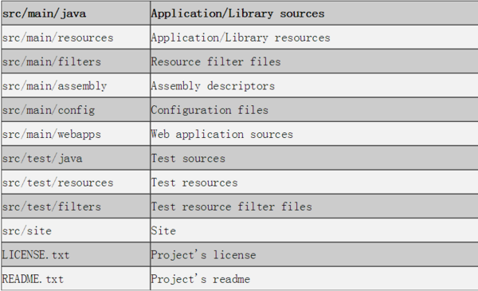
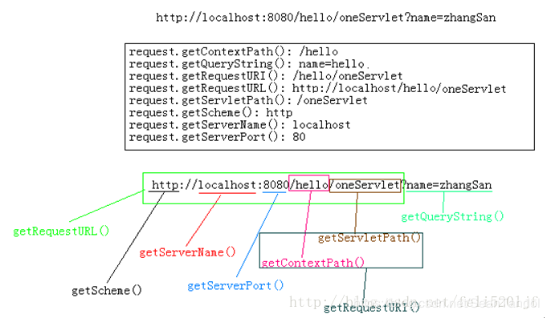

charactoristics on hyperledger fabric
charactoristics on hyperledger fabric
一个标准的可认为是最佳实践的fabric项目应当具备的特性
- 初始配置
- 各组件启动
- 通道创建和加入
- 链码的注册和实例化
- 界面化的demo演示交易的调用
- blockchain explorer启动和查看运行、网络、区块、交易
- demo应用监听事件
软件开发
cabala重构点： 根据接口查脚本 根据脚本反查接口



netstat -ant |grep CLOSE_WAIT|wc -l
本篇文章留存，用作帮助使用shell去快速发布一篇文章
##
https://zhuanlan.zhihu.com/p/48307582
C->iOS->javascript->Java->Go
如何在mac上安装jykell
Next you can update your site name, avatar and other options using the _config.yml file in the root of your repository (shown below).